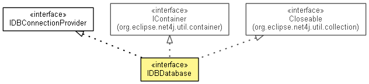

org.eclipse.net4j.db
Interface IDBDatabase
- All Superinterfaces:
- Closeable, IContainer<IDBConnection>, IDBConnectionProvider, INotifier
- public interface IDBDatabase
- extends IContainer<IDBConnection>, IDBConnectionProvider, Closeable

- Since:
- 4.2
- No Implement
- This interface is not intended to be implemented by clients.
- No Extend
- This interface is not intended to be extended by clients.
DEFAULT_STATEMENT_CACHE_CAPACITY
static final int DEFAULT_STATEMENT_CACHE_CAPACITY
- See Also:
- Constant Field Values
getAdapter
IDBAdapter getAdapter()
getSchema
IDBSchema getSchema()
openSchemaTransaction
IDBSchemaTransaction openSchemaTransaction()
getSchemaTransaction
IDBSchemaTransaction getSchemaTransaction()
updateSchema
void updateSchema(IDBDatabase.RunnableWithSchema runnable)
getConnection
IDBConnection getConnection()
- Description copied from interface:
IDBConnectionProvider
- Returns a connection.
- Specified by:
getConnection in interface IDBConnectionProvider
getConnections
IDBConnection[] getConnections()
getStatementCacheCapacity
int getStatementCacheCapacity()
setStatementCacheCapacity
void setStatementCacheCapacity(int statementCacheCapacity)
Copyright (c) 2011, 2012 Eike Stepper (Berlin, Germany) and others.